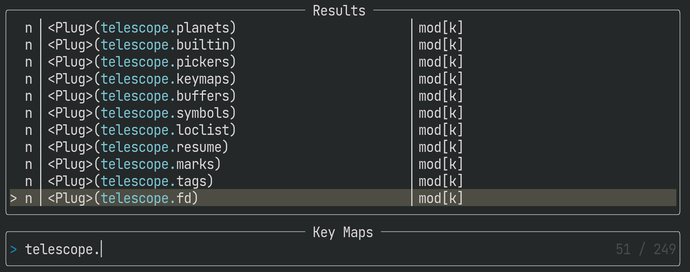
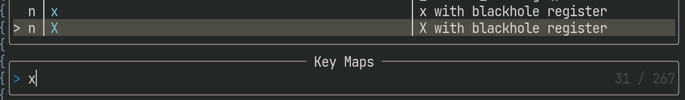

:Telescope keymapsのコマンドパレット化
<Plug>マッピングを自前で定義
:Telescope keymapsはマッピングを検索・実行できるので、自前で様々なマッピングを用意してやれば、簡単にランチャー化できます。しかし、まじめにマッピングすると、重複なく直感的なキー入力を考える必要があり、コストが高い方法です。
しかし、<Plug>系マッピングの検索・実行が可能な点を考慮すると可能性が広がります。たとえば私は、telescope.builtinに含まれるすべての関数を<Plug>(telescope.*)という名前で登録しています。そして:Telescope keymapsで「telescope」を検索すると以下のように絞り込めます。

上記と同等のことは以下のExコマンドの:Telescope Builtinでも実行できますが、:Telescope keymapsをより汎用的なコマンドパレット化できるので気に入ってます。
<Plug>マッピングの登録は以下の通りfor文で行っています。
for k, v in pairs(require("telescope.builtin")) do
if type(v) == "function" then
vim.keymap.set('n', '<Plug>(telescope.' .. k .. ')', v)
end
endマッピングに説明文（desc）を追加
:Telescope keymapsを使ったコマンドパレットは便利ですが、マッピングによっては検索性に難があります。
たとえば、<Plug>以外のマッピングは検索しにくい場合があります。私はxで文字を消す時はblack hole registerを使っています。もし、検索してマッピングを探したくなったら何をキーワードにすればいいでしょうか？
vim.keymap.set({ 'n', 'v' }, 'x', '"_x')<Plug>を組み合わせてマッピングしていれば検索性は若干向上しますが、設定が冗長になります。
vim.keymap.set({ 'n', 'v' }, '<Plug>(x-with-blackhole-register)', '"_x')
vim.keymap.set({ 'n', 'v' }, 'x', '<Plug>(x-with-blackhole-register)')加えて、<Plug>を使ったマッピングは文字数制限にひっかかりやすい問題や、半角スペースが検索時に<Space>と表示される問題があります。後者はsnake_caseやkebab-caseなどで単語を区切る手もありますが、スペースの方が読み易い人も多いでしょう。
このような場合にマッピングに説明文をつけると便利です。
vim.keymap.set({ 'n', 'v' }, 'x', '"_x', {desc = "x with blackhole register"})
vim.keymap.set({ 'n', 'v' }, 'X', '"_X', {desc = "X with blackhole register"})すると、検索画面の右側にdescに指定した説明文が表示されるようになります。
descが未指定の場合は、"_xなど、rhsに相当する文字列が表示されます。

検索候補を事前に絞り込み
ここまでの設定で:Telescope keymapsをコマンドパレット化できました。しかし、プラグイン由来のマッピングも含めて検索すると煩わしいかもしれません。
その場合、先述のdescに特別なキーワードを入れて絞り込みしやすくするといいでしょう。私は☆を入れています。
加えて、マッピング経由で検索を開始する時は自動で☆で絞り込む設定が便利です。
vim.keymap.set('n', 'mm', function()
require('telescope.builtin').keymaps()
vim.cmd("normal! i☆")
end)これなら、起動直後にバックスペースで一字消すだけで、☆をつけていない検索候補にもアクセスできます。